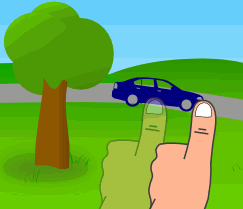
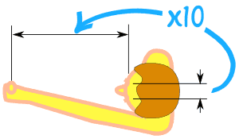
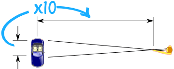

Estimate How Far Away
Here is a clever method to estimate how far away something is:
- Hold your arm straight out, thumb up
- Close one eye, align your thumb with distant object
- Switch eyes (don't move your thumb!)
- Your thumb will seem to change position
Now ... estimate how far it moved sideways (you could imagine the length of a car or something).
Multiply that by 10 and you have an estimate of how far away.

Example
Here your thumb seems to jump about half a car length.
Half a car length is about 2.5 meters.
Times 10: the car is about 25 meters away.
How it Works

The distance from your eyes to your thumb is about 10 times the distance between your eyes

And so the distance to the far object is also about 10 times the width your thumb seems to move at the far object.
This works because the triangles are similar,
and so the relative lengths are the same.
Learn the Size of Things
To be useful you need to know how long, wide or tall things are!
- Small cars are 4 m long
- Large cars are 5 m long
- Cars are about 1.8 m wide
- Adults are about 1.8 m tall
- A 5 year old is about 1 m tall
- A normal doorway is 2 m high and 0.8 m wide
- A truck and trailer is about 20 m long
- The width of a small house is about 8 m
- The width of a large house is about 12 m
- The height of a single-storey house is about 5 m
- The height of a two-storey house is about 8 m
- Tall buildings have about 3.5 m for every storey
(Note: to use this method for height, tilt your head and thumb 90° to the side.)
Your Turn
Go outside and stand on a high spot where you can see lots of things (roads, building, etc).
Write down what you see and estimate how far away:
| Object | "Thumb move" Distance |
×10 = How Far Away |
|---|---|---|
Bonus Activity: Get a map, mark where you stood and where each object is, and work out how far away they really are. How good were you?